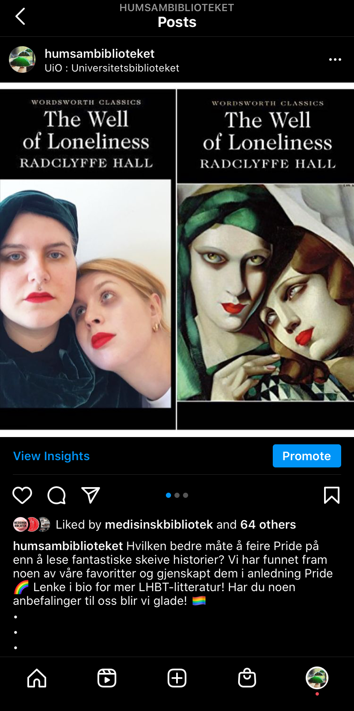

Instagram-takeover, studentbetjenter
Ide og regi. I samarbeid med desken på HumSam-biblioteket ble det bestemt at de ansatte studentene skulle ta styring på instagram over sommeren. I dette prosjektet har jeg både filmet, klippet, utviklet flere ideer selvstendig og lagt filter/musikk og tekst på videoene. De er tilpasset det hurtige formatet på instagram, samtidig som det gir studentene i målgruppen en følelse av hvordan miljøet på biblioteket er. Obs: musikk fra Instagram er ikke med i videoene på grunn av rettigheter, så forestill dere at alle videoene med musikk er ekstra morsomme.
Video 1: Sommerferie for de fast ansatte i desken
Basert på et tidligere klipp jobbet vi frem ideen sammen. Den gir lekent inntrykk for at de "voksne" tar sommerferie, for så å vise at studentene løper inn på biblioteket.
Video 2: Sommerferie for de fast ansatte i desken
Denne videoen bygger videre på Video 1, og fremstiller på en leken måte at det er sommerferie og at studentene vil komme med oppdateringer. Ide og redigering av meg, filmet av en annen student.
Video 3: Grønlund
Møt Grønlund, returmaskinen til biblioteket! Vi ser ofte bøker lagt ved utlånsmaskinene fordi det er mange lånere som ikke forstår helt hvordan returmaskinen fungerer. Formålet med denne videoen var på en morsom måte å avmystifisere returmaskinen.
Videoer til lockdown-periode
Da Norge stengte ned i mars trengte biblioteket å formidle informasjon om alternative tjenester og løsninger. Disse videoene ble lagt ut som "stories" på instagram og forsvinner etter 24 timer. Formålet er å formidle annerledes-tilbudene som eksisterte da samfunnet som helhet var stengt, på en lettfattelig og morsom måte.
Introduksjon til Unntaksbiblioteket
Hvordan levere bøker i Takeaway-biblioteket
Bok-anbefaling til Pride
Til pridemåneden 2020 satt Universitetsbiblioteket sammen en anbefaling av faglitteratur. I den anledning foreslo og gjennomførte jeg en gjenskaping av forsiden på banebrytende skeiv litteratur som et akkompagnement til litteraturlisten.
